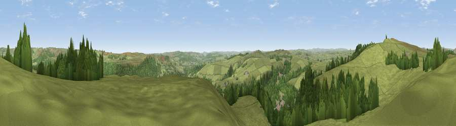

Viewpoint near Eyam
#12538 in England · top 14% of its area beats it · near EyamWhere it is
The exact computed spot (SK 22525 77075). Click the marker for map links.
The view, rendered

A 360° render of this exact spot computed from the terrain model, tree cover and land cover — summer colours, afternoon light, calibrated against photographs of famous viewpoints. Real trees, hedges and buildings will differ in detail.
The panorama
Grey silhouette: terrain skyline in each direction (720 bearings, Earth curvature and refraction included). Dashed green: skyline with trees (+15 m) and buildings (+8 m) as obstacles. Blue strip: how far the ground is visible on each bearing.
Where the view opens
Wedge length = distance to the farthest visible ground on that bearing (vegetation-aware). Rings at 10, 25 and 50 km.
What fills the view
73% grassland · 26% woodland · 1% built-up
Angular shares of the visible panorama (visual magnitude), not map area. Landscape diversity 0.28 (0–1 Shannon).
Key numbers
More beautiful places nearby
The staircase of upgrades: each row has a higher view potential than everything closer. Driving times are estimates from straight-line distance, calibrated against real road routing — check an actual route before setting out.
| Place | Direction | Drive | Score |
|---|---|---|---|
| Sir William Hill | NW · 1 km | ~4 min | 68.3 |
| High Rake | SSW · 4 km | ~9 min | 71.1 |
| Viewpoint near Thornhill | NNW · 12 km | ~23 min | 74.1 |
| Viewpoint near Wharncliffe Side | NNE · 21 km | ~36 min | 75.2 |
| Tissington Hill | SSW · 26 km | ~41 min | 75.5 |
| Wild Bank | NW · 32 km | ~49 min | 76.2 |
| Viewpoint near Carrbrook | NW · 33 km | ~50 min | 77.1 |
| Viewpoint near Mow Cop | WSW · 41 km | ~61 min | 78.9 |
53.29017, -1.66356 · source: screening · position refined by local search. Computed location — check access rights before visiting.